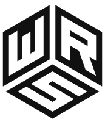

WRSolid logo: draft 1
Flat vector monogram based on the stone concept: an isometric cube with W, R and S cut out of its three faces. The wordmark is Montserrat. Option A follows the monitor mockup (regular "WR", bold "SOLID", green dot); option B follows the upper-left mockup (all bold).
Monogram
Navy on chalk

Chalk on graphite
Single colourHorizontal lockup: option A (regular + bold, green dot)
WRSOLID
WRSOLID
Horizontal lockup: option B (all bold)
WRSOLID
WRSOLID
Stacked lockup
WRSOLIDWe Are Solid
WRSOLIDBuilt to Last.
Stone presentation (hero / signage effect, not part of the logo file)
WRSOLID
We Are Solid
The texture here is generated noise as a stand-in. The site should use a real, darkened slate photo.